There are many risks to technology, which would translate bad into civilian usage, especially for education purposes. One such is the risks of virtual reality. Virtual reality is the act of simulating the real-world using technology such as headset, headphones, and hand controllers to immerse your visual and hearing to that of the virtual world. This marvellous technology made for entertainment and education purposes, such as medical or military, has many risks.
A problem of using goggles for VR (Virtual Reality) is that many people through prolonged use suffer from motion sickness. People who use VR are subject to problems such as eyestrain, headaches and in some cases nausea from motion-sickness. As Walter Greenleaf, a Behavioural Neuroscientist put it in a CNN article, in VR the way things are seen are different. In VR something could be seen as far away, but in reality it's only a few centimetres away from us, which tricks and affects the brain, making it feel delusional when subject to fast movements - which leads to headaches and nausea. From prolonged use of VR, headaches and nausea are developed from being disconnected from the real world for too long. In the same article it's said that you should have a break every half-hour, for 10 minutes to reduce the side-effects of constant use (LaMotte, 2017).
This is a problem for long use for medical use or in educational military simulations, as the short active time isn’t effective. This means that using VR too long and too frequently, in the case of, for example, surgery or combat simulations, this would hinder active time of using VR headsets without having any consequences. This isn’t helpful as surgeries and combat training require a lot of time, and usage for 30 mins before a break isn’t enough.
Another problem of VR is the risks it has to our eyes, from eye strain to nearsightedness. Using VR headsets for too long not only poses risks such as nausea and headaches, it can also lead to short term eye problems such as eye strain and even long term such as near-sightedness risks. According to Professor Martin Banks, VR could lead towards conditions such as myopia. This is a prevalent issue in the modern world, as in the 1970’s it grew in the population from 25% to 40% in the 2000’s in America, millions of Americans being near-sighted (LaMotte).
What this means is that using VR too much, even if you have breaks, could increase your chances of getting myopia (near-sightedness). This is already a large problem in today's modern technological world, due to smart devices and the increase of screen-time. Having a VR display in such close proximity increases the risks of eye-damage and other risks including nausea and headaches.
These risks are to be considered when using this technology for educational purposes such as surgery or combat, since development of myopia would be a big issue as both careers require good vision for precise focus and judgement.
Although gaming is becoming more and more realistic through the development of technology, this can pose a slippery slope. For example, Agostini (2021) predicted that the use of AI could become a large component of the technology used in game development. He says that AI usage could be popular in the near future for NPC (Non-playable character) creation, for more realistic facial gestures and interactions, but also for more fluent dialogue from the NPC and the player using AI generated responses. One way gaming studios could save money in game development using AI would be to start using deepfakes. Specifically, Agostini says, “Deepfakes allows sampling of real actors’ expressions and features to generate real-time facial movements based on the chat-generated text.” The effect of this being, rather than hiring an expensive actor to film for long periods of time, the studio could take short samples and then use AI to generate a large selection of character animation to be used in the game.
One major risk to the use of deepfakes is replicating a leader figure, saying something inappropriate or misleading, or even a declaration of war if it is a nation's leader. As the possibilities are endless when it comes to deceiving with deepfakes, through pictures, videos, and audio ("Deepfakes: Trick or treat?," n.d.). This means that the use of deepfakes in technology is a great threat to political figures, and celebrities alike as they are simply to generate, so anyone can generate a simulation. The use of this in education in the wrong hands could be disastrous, from ending a person's career, to declaring war on another nation.